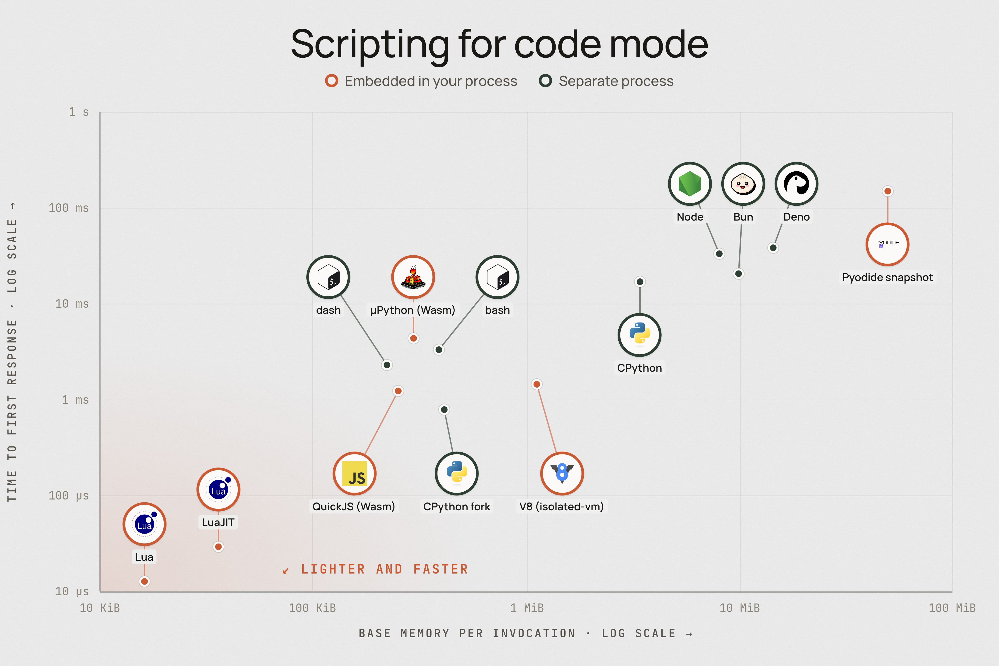
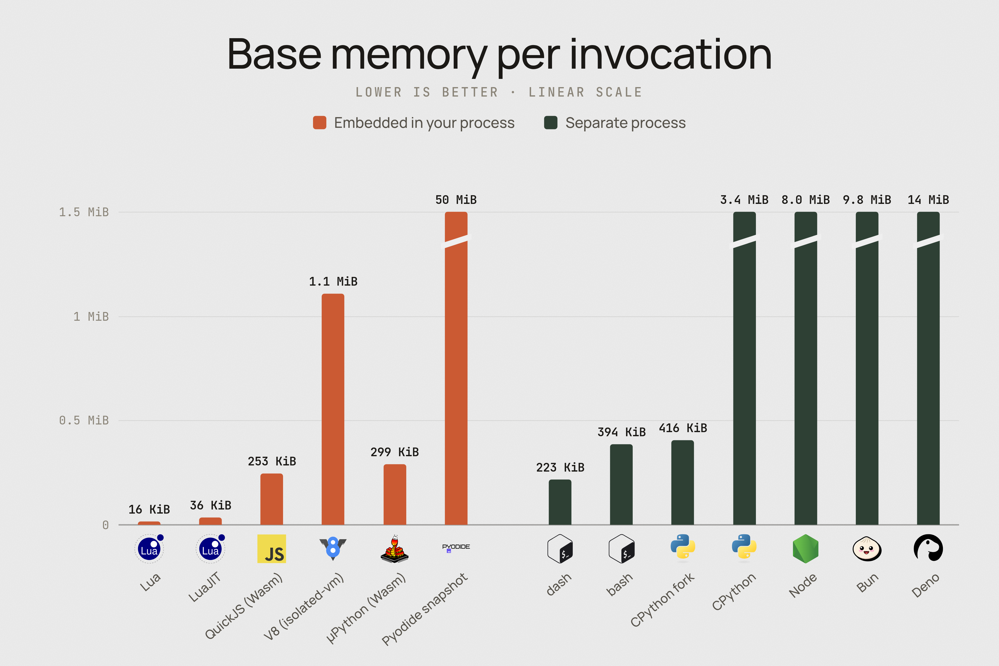
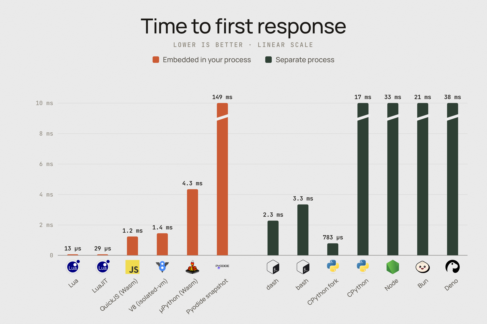
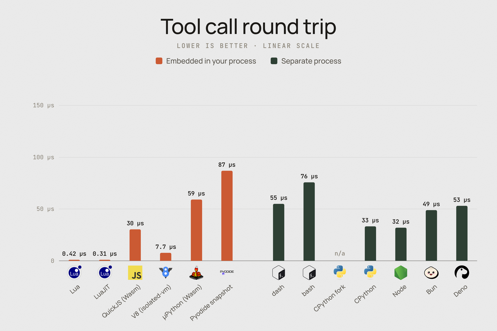
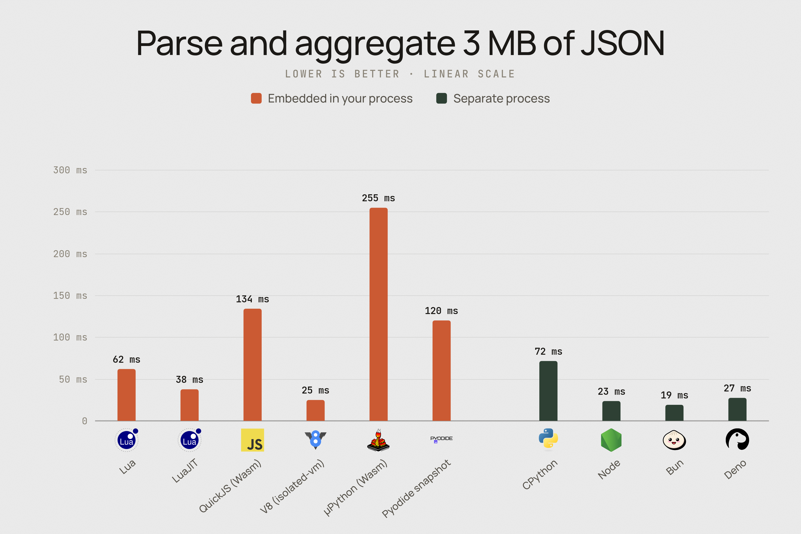
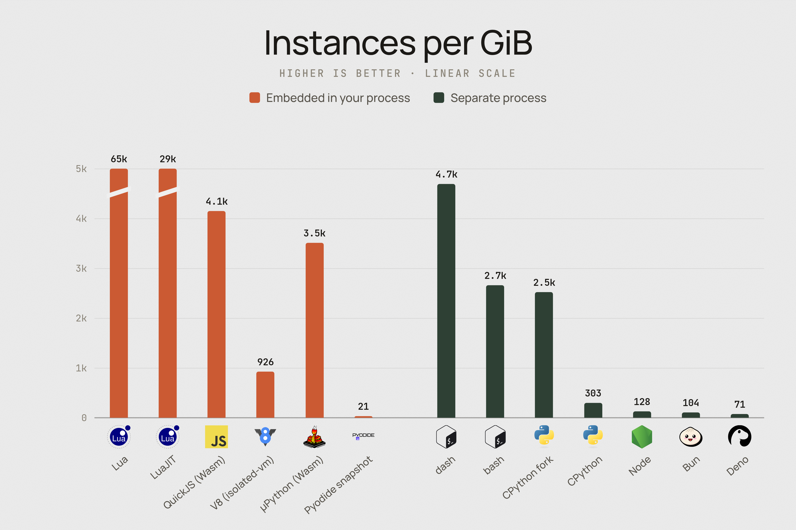

Code mode charts

Memory vs time to first response
Download
Combined: memory, start, tool call
Download

Base memory per invocation
Download

Time to first response
Download

Tool call round trip
Download

Compute: parse and aggregate 3 MB of JSON
Download

Instances per GiB
Download